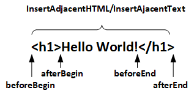

Виды позиционирования
Position
- Static - Значение по умолчанию. Расположение объектов сверху вниз в потоке документа.
- Relative - Элемент выдергивается из потока, но место из под него остается зарезервировано.
- Absolute - Кирпичи схлопываются вместо выдернутого блока позиционирование ведется от левого верхнего края документа либо от левого верхнего края родителя
- Fixed - Кирпичи схлопываются вместо выдернутого блока позиционирование ведется от левого верхнего края документа. В комплексе с z-index делаются назойливые банеры. )
Как только мы задаем любой вид позиционирования отличный от значения по умолчанию стразу включаются следующие свойства позиционирования.
